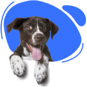
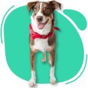
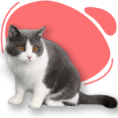

Olá! Veja os amigos disponíveis para doação
-
Dunga
- 2 anos
- Porte pequeno
- Calmo e educado
- 
Felícia
- 3 meses
- Porte pequeno
- Ativa e carinhosa
Sirius
- 6 meses
- Porte grande
- Ativo e educado
- 
Fiona
- 3 anos
- Porte pequeno
- Calma e carinhosa
Sid
- 8 meses
- Porte médio/grande
- Brincalhão e amável
- 
Yoda
- 1 ano
- Porte médio
- Ativo e carinhoso
Lua
- 6 meses
- Porte médio
- Ativa e carinhosa
Amora
- 45 dias
- Porte grande
- Calma e carinhosa

Zelda
- 5 meses
- Porte médio
- Ativa e amável